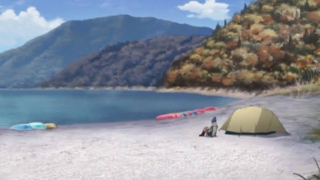

1. Kōan 浩庵キャンプ場
Qué pasa: Rin acampa sola en noviembre; Nadeshiko, recién mudada, se duerme en un banco buscando el Fuji del billete de 1.000 ¥.
Lo que aprenden: Un gesto pequeño (compartir unos fideos calientes) puede empezar una amistad.
Qué comen: カレーめん · fideos de curry instantáneos
El sitio real: Parcelas en la orilla del lago Motosu, con la misma vista del Fuji que el billete de 1.000 ¥. En invierno baja de 0 °C por la noche.